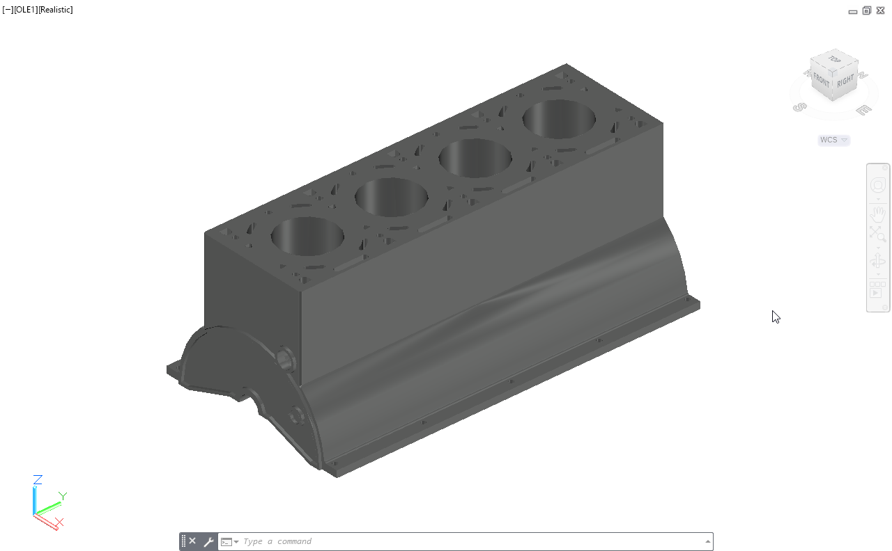

Modeling Diesel Engine Parts
This project covers the 3D modeling of main diesel engine components like the connecting rod, piston, and engine block. The aim was to understand how each part is shaped, sized, and connected inside the engine assembly.
About Project
I started with the connecting rod, focusing on its circular ends and smooth body shape. Getting the alignment and hole placement correct helped me learn precision and balance in desig
Next, I modeled the piston by creating the main body, grooves, and pin holes. It helped me study how the piston fits and moves with the connecting rod inside the cylinder.
Finally, I created the engine block, which was the most detailed part. I worked on the cylinder spaces and mounting areas to make sure all parts fit properly.
This project gave me a clear idea of how engine components work together and improved my accuracy and 3D modeling confidence.